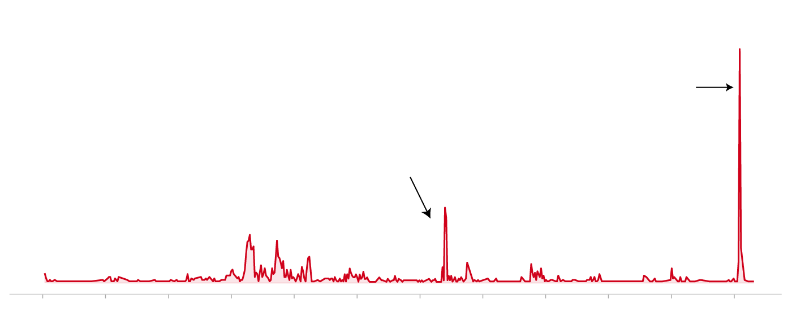
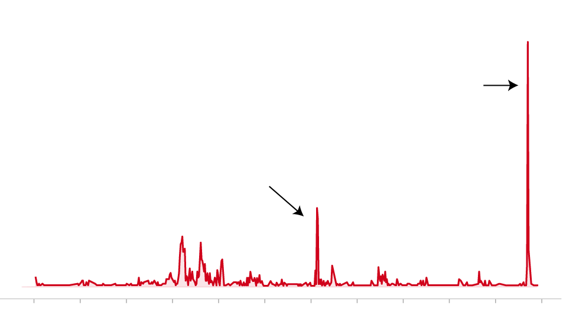
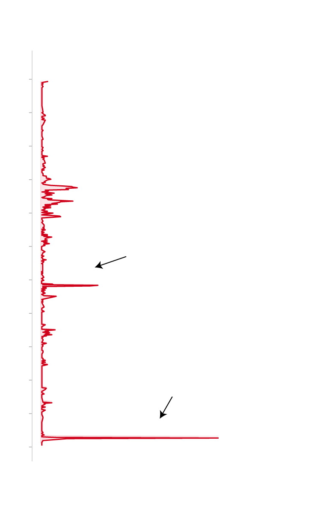

The Crackdown
The Worst in a Decade
Due to a sharply declining currency, a series of protests sprung up across Iran which would eventually lead to a nation-wide internet blackout, and an unprecedented wave of attacks on protesters. The Iranian political establishment had weathered protests like this before — including the Women, Life, and Freedom Movement of 2022–23 — though something was different this time.
On January 8th, 2026, the Iranian government launched a full-scale internet blackout; a smokescreen which would provide cover for the regime's relentless assault on protesters around the country. The scale of the crackdown shocked the world, with photos and videos slowly trickling out through hidden networks and satellite uploads. Time recently reported that the death toll could be as high as 30,000.

Iran’s Violence Against Protestors Drives the Region
Weekly protest violence incidents across MENA as recorded by ACLED up to March 2026
160
140
Protests erupt in December 2025
120
over a sharp drop in Iran’s currency
Weekly incidents
100
Water shortages spark the largest Iranian
80
protests in a decade, with swift police retaliation
60
40
20
0
2015
2016
2017
2018
2019
2020
2021
2022
2023
2024
2025
2026

Iran’s Violence Against Protestors Drives the Region
Weekly protest violence incidents across MENA as recorded by ACLED up to March 2026
160
140
Protests erupt in December 2025
over a sharp drop in Iran’s currency
120
Weekly incidents
100
Water shortages spark the largest Iranian
80
protests in a decade, with swift police retaliation
60
40
20
0
2015
17
19
21
23
25

Iran’s Violence Against Protestors Drives the Region
Weekly protest violence incidents across MENA as recorded by ACLED up to March 2026
2015
17
19
Water shortages spark the largest
Iranian protests in a decade, with
swift police retaliation
21
23
Protests erupt in December 2025
over a sharp drop in Iran’s currency
25
0
20
80
160
100
120
140
40
60
Weekly incidents
The Map
Spread Across All 31 Provinces
While the Iranian people are no strangers to government violence, the current crackdown represents a roughly 300% increase in violent incidents recorded against protesters compared to the previous high-water mark in November 2022.
Amnesty International reports that Iranian security forces engaged protesters with small arms, mass arrests, and enforced disappearances across all of Iran's 31 provinces. Amnesty confirmed at least one hospital was operating a makeshift morgue with at least 205 body bags.
Excessive force against protesters, MENA region, 2016–present
Methodology
About This Data
This visualization uses data from the Armed Conflict Location & Event Data Project (ACLED). The map focuses on incidents classified as "Excessive force against protesters" within the Middle East and North Africa region. The largest limitation is ACLED's own Peaceful Protesting dataset, and other significant event categories that could broaden this analysis are not included.
This project was built to show how the 2025–26 Iran protests compare to the last decade of unrest across the region.